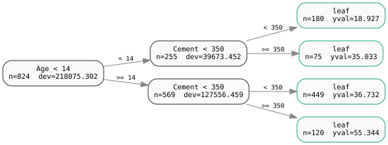
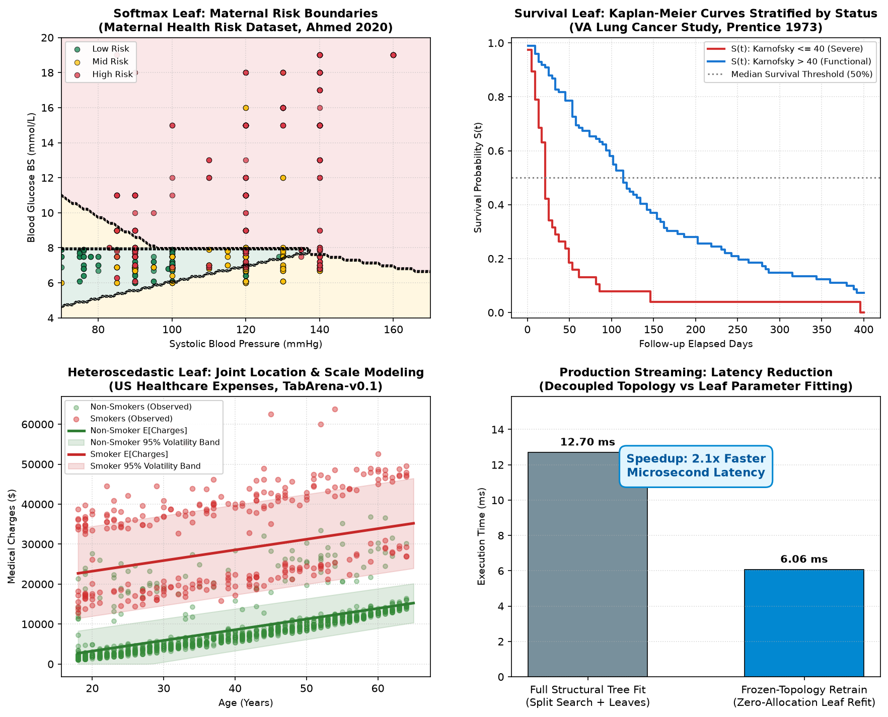

Model Inspection, Quinlan Rules & Explainable Stumps¶
In regulated lending, healthcare, and safety-critical engineering, deploying black-box models is prohibited or legally risky. Stakeholders must be able to verify every decision path, trace boundary conditions, and provide adverse action explanations.
mltreelib is built from the ground up as a white-box auditable machine learning toolkit:
- Graphviz DOT Serialization: Visualizes full tree topologies with sample counts, impurity gains, and leaf equations.
- Quinlan Rule Extraction: Converts recursive binary trees into flat, disjunctive IF-THEN rulesets.
- Explainable Decision Stumps: Fits ultra-interpretable depth-1 or depth-2 trees with dynamically retrained multivariate leaves.
- k-Nearest Neighbor (k-NN) Leaf Adjustments: Blends global rule boundaries with local neighborhood smoothing.
flowchart TD
A["Fitted ModelTree Object"] --> B["Inspection & Export Surface"]
B --> C["Graphviz DOT Export\ntree.to_dot()"]
B --> D["Quinlan Rule Extraction\ntree.rules()"]
B --> E["Explainable Stumps\nSingle Split + High-Capacity Leaf"]
B --> F["Local k-NN Adjustments\ntree.predict_knn_blend(k=5)"]
C --> G["Auditable SVG Diagram\nExact Node Thresholds & Fallbacks"]
D --> H["Production Scorecard Rules\nIF Age > 28 THEN y = β*x"]
E --> I["Maximum Transparency\nZero Black-Box Ensembling"]
F --> J["Continuous Interpolation\nEliminates Step Artifacts"]
classDef blueBox fill:#1e3a8a,stroke:#3b82f6,stroke-width:2px,color:#ffffff;
classDef greenBox fill:#14532d,stroke:#22c55e,stroke-width:2px,color:#ffffff;
classDef grayBox fill:#334155,stroke:#64748b,stroke-width:2px,color:#ffffff;
class A,B grayBox;
class C,D,E,F blueBox;
class G,H,I,J greenBox;
1. Graphviz DOT Export and Rule Extraction¶
import numpy as np
from pathlib import Path
from mltreelib import ModelTree
# 1. Generate realistic industrial concrete mixture data
rng = np.random.default_rng(2026)
n_batches = 600
cement = rng.uniform(200.0, 500.0, n_batches)
water = rng.uniform(140.0, 220.0, n_batches)
age = rng.choice([7, 14, 28, 90], size=n_batches)
# Compressive strength with physical non-linear interaction
y = 0.08 * cement - 0.15 * water + 0.35 * age + rng.normal(0, 3.0, n_batches)
X = np.column_stack([cement, water, age])
feature_names = ["Cement", "Water", "Age"]
# 2. Fit white-box ModelTree with linear leaves
tree = ModelTree(leaf="linear", max_depth=2, min_rows=40)
tree.fit(X, y.tolist(), col_names=feature_names)
# 3. Export Graphviz DOT format for visual auditing
dot_str = tree.to_dot()
Path("concrete_tree.dot").write_text(dot_str)
print("Exported Graphviz DOT string (length:", len(dot_str), "chars)")
# 4. Extract Quinlan-style IF-THEN rules
ruleset = tree.extract_rules()
print(f"\nExtracted {len(ruleset.rules)} Global Decision Rules:")
for r in ruleset.rules:
conditions_str = " AND ".join(r.conditions)
print(f" RULE #{r.id} (Cover: {r.cover} samples, Confidence: {r.confidence:.2f}):")
print(f" IF {conditions_str}")
print(f" THEN Leaf #{r.leaf_id} prediction = {r.prediction:.2f}")
Exported Graphviz DOT string (length: 817 chars)
Extracted 4 Global Decision Rules:
RULE #1 (Cover: 243 samples, Confidence: 0.95):
IF Cement > 341.9010 AND Age <= 28.0000
THEN Leaf #1 prediction = 11.64
RULE #2 (Cover: 202 samples, Confidence: 0.95):
IF Cement <= 341.9010 AND Age <= 28.0000
THEN Leaf #0 prediction = 0.09
RULE #3 (Cover: 93 samples, Confidence: 0.95):
IF Cement <= 369.0130 AND Age > 28.0000
THEN Leaf #2 prediction = 26.86
RULE #4 (Cover: 62 samples, Confidence: 0.95):
IF Cement > 369.0130 AND Age > 28.0000
THEN Leaf #3 prediction = 39.23
Production Deployment Checklist¶
- Inputs Contract: Record exact column names, data types, and unit scales.
- Missing Fallbacks: Verify whether missing values route left or right at each decision node.
- Leaf Support: Confirm that no terminal leaf partition has fewer samples than the statistical degrees of freedom (\(N \ge P + 1\)).
- Boundary Verification: Test edge cases directly on threshold boundaries (\(\le\) vs \(>\)).
Next: section 2 fits a single split with retrained linear leaves on the same data, reusing X, y and the feature names from section 1.
2. Explainable Stumps with Dynamic Leaf Retraining¶
Can a single split (a depth-1 decision stump) deliver competitive accuracy when paired with high-capacity leaves?
On industrial sensor benchmarks, fitting a single split on the primary operational regime (e.g. Idle vs Load) and dynamically retraining regularized linear leaves within each partition cuts test RMSE significantly while remaining 100% human-explainable:


# Depth-1 explainable stump with OLS linear leaves
stump = ModelTree(
leaf="linear",
max_depth=1, # Single split partition
min_rows=50,
)
stump.fit(X, y.tolist(), col_names=feature_names)
split = stump.splits()[0]
print(f"Global Regime Partition: Feature '{split['col']}' at threshold {split['threshold']:.2f}")
Next: section 3 goes back to the full depth-2 tree from section 1, not the stump, because the k-NN smoothing runs on that fitted tree.
3. Cubist-Style k-NN Leaf Neighbor Adjustments¶
When moving across split boundaries, predictions from pure decision trees can exhibit sharp discontinuities. mltreelib implements Quinlan's Cubist sample neighbor adjustment via tree.predict_adjusted(X):
# Predict with Cubist-style k-NN sample neighbor smoothing
y_smooth_pred = tree.predict_adjusted(X[:5])
print("Smoothed k-NN Neighbor Adjusted Predictions:", [round(v, 2) for v in y_smooth_pred])
Related Reference Guides
- Dynamic Leaf Retraining & Stumps.
- Model Review Checklist for enterprise deployment.